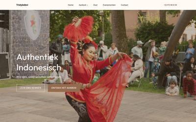
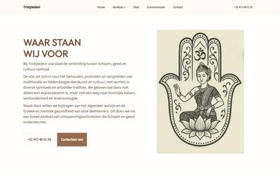
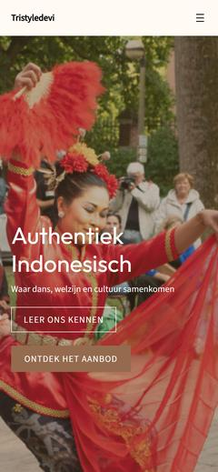
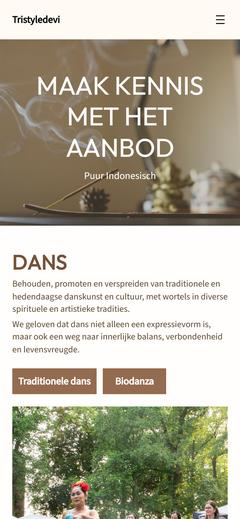

$ cd ~/projects/tristyledevi
> Tristyledevi_
2026 (Ongoing)
Tristyledevi is a Belgian non-profit that brings Indonesian dance, wellbeing and culture to workshops, lessons and events. I built their website for them: tristyledevi.be.
This was a project for a real customer. They are not technical, so my job was to turn what they wanted into a website. I listened to their wishes, explained the options in plain language and guided them through the choices, from the structure of the pages to the photos and the text. The site is in Dutch, with a clear offer, an about page and an easy way to get in touch.
It is also my first WordPress site. I normally build sites in code, so I set myself the challenge to learn WordPress.
I take care of the hosting as well. The site runs on Netcup, and the customer deals with me for both the website and the hosting.



